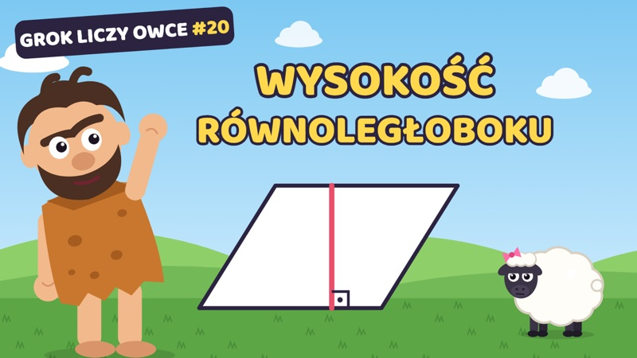

Równoległobok, romb i kwadrat
Co to jest równoległobok? Grok zbija prostokątną zagrodę z czterech desek, owce się o nią opierają i zagroda się przekrzywia. Zepsuła się? Nie, teraz to równoległobok! W filmie poznajesz boki i kąty równoległoboku, sprawdzasz, że prostokąt też jest równoległobokiem, wycinasz z kartki romb i uczysz się rysować równoległobok i romb w zeszycie w kratkę.

Przykład krok po kroku
Jeden kąt równoległoboku ma 50°. Ile mają pozostałe kąty?
- Kąt naprzeciwko jest równy: też 50°.
- Kąty przy jednym boku mają w sumie 180°, więc kąt obok ma 180° − 50° = 130°.
- Kąty równoległoboku: 50°, 130°, 50° i 130°.

Poćwicz w grze: Krzywa zagroda
Pastwisko do tego odcinka w darmowej grze „Policz stado!”. Bez logowania, działa na telefonie i na tablicy interaktywnej.
Zagraj: Krzywa zagrodaPytania i odpowiedzi
Czy prostokąt jest równoległobokiem?
Tak. Prostokąt ma dwie pary boków równoległych, więc jest równoległobokiem. To równoległobok, który ma wszystkie kąty proste.
Czym romb różni się od kwadratu?
Romb ma wszystkie boki równe, ale jego kąty nie muszą być proste. Kwadrat jest rombem, który ma kąty proste i przekątne równej długości.
Jak narysować romb w zeszycie w kratkę?
Zacznij od przekątnych: jednej pionowej i jednej poziomej. Muszą się przecinać w połowie każdej z nich. Potem połącz ich końce.
Inne tematy: matematyka klasa 5
 Cechy podzielności przez 2, 3, 4, 5, 9 i 10
Cechy podzielności przez 2, 3, 4, 5, 9 i 10
 Liczby pierwsze i złożone
Liczby pierwsze i złożone
 Dzielenie pisemne krok po kroku
Dzielenie pisemne krok po kroku
 Trójkąty: warunek trójkąta, suma kątów i rodzaje
Trójkąty: warunek trójkąta, suma kątów i rodzaje
 Trójkąt równoboczny, równoramienny i różnoboczny
Trójkąt równoboczny, równoramienny i różnoboczny
 Wysokość trójkąta
Wysokość trójkąta

Wysokość równoległoboku